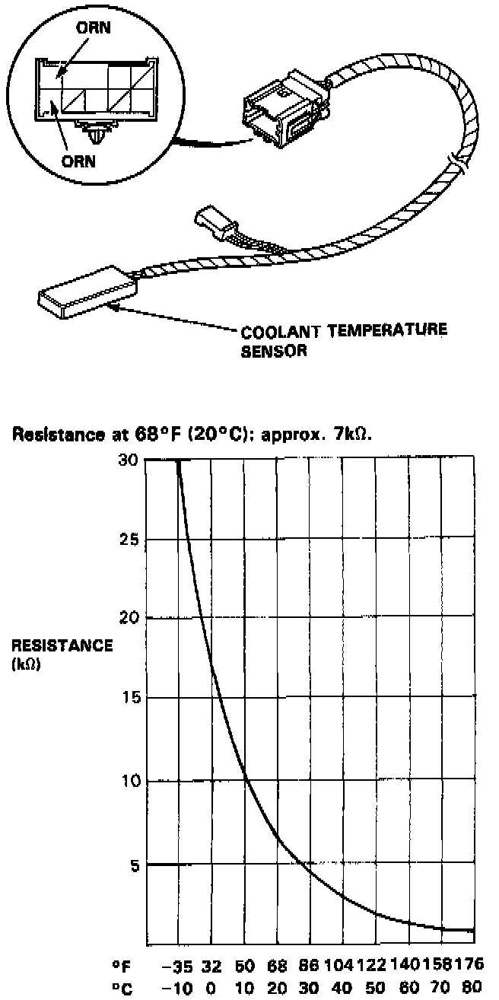

Component Tests

Compare the resistance reading between terminals of the coolant temperature sensor with specifications shown in the graph: It should be within specifications.
- Use DIGITAL MULTIMETER (KS-AHM-32-003) or equivalent.
- Use 20 kOhm range.